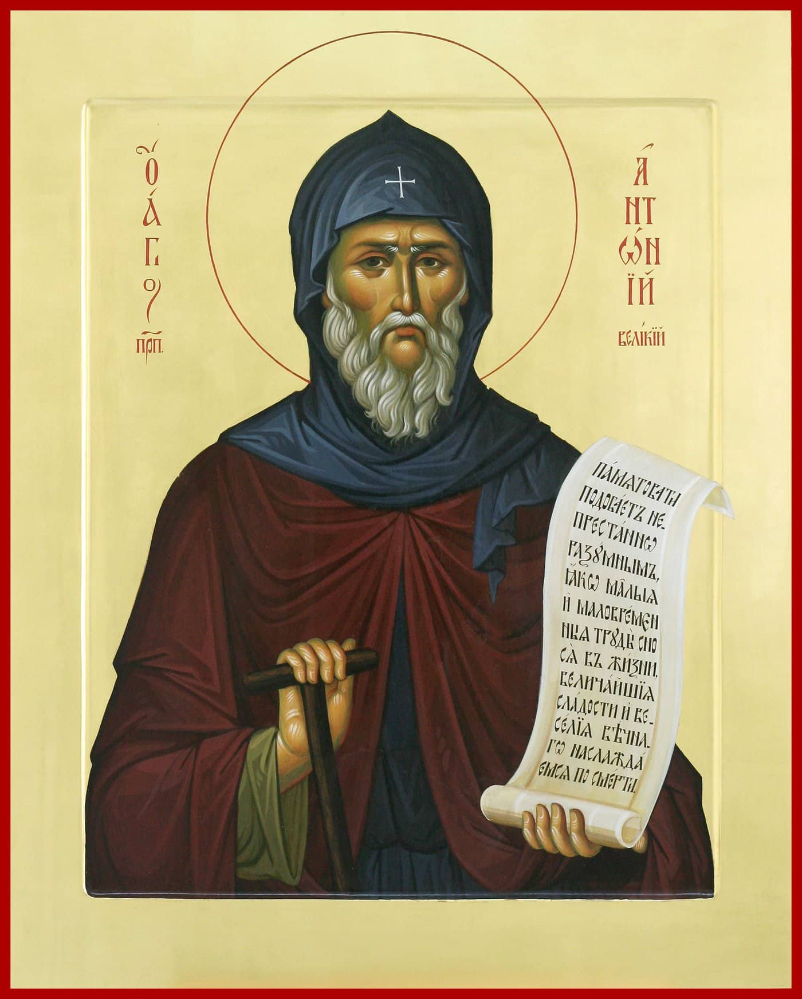

Mindennapi Imák

Reggeli imák
Az Atyának és Fiúnak és Szentléleknek nevében. Ámin.
Dicsőség Néked, Istenünk, dicsőség Néked.
Mennyei Király, Vigasztaló, igazságnak Lelke, aki mindenütt jelen vagy és mindeneket betöltesz, minden javak kincsestára és az élet adományozója, jöjj, és lakozzál mibennünk, és tisztíts meg minket minden szennyfolttól, és üdvözítsd, Jóságos, a mi lelkünket.
Szent Isten, Szent Hatalmas, Szent Halhatatlan, irgalmazz nekünk. (3x)
Dicsőség az Atyának és Fiúnak és Szent Léleknek, most és mindenkor és mindörökkön örökké. Ámin.
Szentséges Háromság, irgalmazz nekünk! Urunk, könyörülj a mi bűneinken. Uralkodónk, bocsásd meg törvényszegéseinket! Szent, keresd fel és gyógyítsd meg a mi betegségeinket a te nevedért!
Uram, irgalmazz! (3x)
Dicsőség az Atyának és Fiúnak és Szent Léleknek, most és mindenkor és mindörökkön örökké. Ámin.
Mi Atyánk, ki a mennyekben vagy, szenteltessék meg a te neved, jöjjön el a te országod, legyen meg a te akaratod, miképpen a mennyben, úgy a földön is.
Mindennapi kenyerünket add meg nekünk ma; és bocsásd meg a mi vétkeinket, miképpen mi is megbocsátunk az ellenünk vétkezőknek; és ne vígy minket kísértésbe, hanem szabadíts meg a gonosztól.
Álmunkból felkelvén, leborulunk Előtted, Jóságos, és az angyalok dicsérőénekét zengjük néked, ó, Hatalmas: Szent, szent, szent vagy Isten, irgalmazz nekünk Isten Szülője által!
Dicsőség az Atyának és Fiúnak és Szent Léleknek.
Felkeltvén engem ágyamról és álmomból, Uram, világosítsd meg elmémet és nyisd meg szívemet és ajkaimat a te dicséretedre, Szent Háromság: Szent, szent, szent vagy Isten, irgalmazz nekünk Isten Szülője által!
Most és mindenkor és mindörökkön örökké. Ámin.
Váratlanul jön el a Bíró, és mindenkinek cselekedetei lelepleztetnek. Kiáltsuk hát félelemmel az éj közepén: Szent, szent, szent vagy Isten, irgalmazz nekünk Isten Szülője által.
Uram, irgalmazz! (12x)
Álmomból felkelvén hálát adok néked, Szentháromság, mert nagy jóságodért és béketűrésedért nem haragudtál meg reám, a restre és bűnösre, és nem pusztítottál el törvényszegéseimmel együtt,
hanem szokott emberszereteteddel fölkeltettél engem, aki a kétségbeeséshez álltam közel, hogy hajnalhasadáskor dicsőítsem a te hatalmadat.
Most pedig világosítsd meg értelmem szemét, nyisd meg számat, hogy a te igéidet tanuljam, parancsolataidat megértsem, és a te akaratodat teljesítsem, szívem vallomásával énekeljek néked,
és dicsőítsem a te szentséges nevedet, az Atyáét és Fiúét és Szentlélekét, most és mindenkor és mindörökkön örökké. Ámin.
Dicsőség néked, Királyom, mindenható Isten, mert emberszerető isteni gondviseléseddel arra méltattál engem, bűnös és méltatlan szolgádat, hogy fölkeljek álmomból és eljöjjek szent házadba.
Úgy fogadd el, Uram, az én könyörgésem hangját is, ahogyan szent szellemi erőid hangját fogadod, és engedd meg, hogy tiszta szívvel és alázatos lélekkel felajánljam néked beszennyezett ajkam
dicsérő szavait, hogy lelkem fényes lámpásával társa lehessek az okos szüzeknek és dicsőitselek téged, az Atyával és a Szentlélekkel együtt dicsőített Isten Igét. Ámin.
Jertek, hódoljunk Istennek, a mi Királyunknak!
Jertek, hódoljunk és boruljunk le Krisztus Isten, a mi Királyunk előtt!
Jertek, hódoljunk és boruljunk le maga Krisztus, a mi Királyunk és Istenünk előtt!
50. Zsoltár
Irgalmazz nékem, Isten, a te nagy irgalmasságod szerint, és könyörületességed sokasága szerint töröld el vétkezéseimet! Teljesen moss meg törvényszegésemtől, és bűnömtől tisztíts meg engem! Mert ismerem törvényszegésemet, és bűnöm előttem van szüntelen. Csak ellened vétkeztem, és a gonoszságot előtted cselekedtem, hogy szavaid igaznak bizonyuljanak, és győzelmet arass, amikor megítélnek. Mert íme, törvénytelenségben fogantam, és anyám bűnökben hordozott. Íme, te az igazságot szereted, bölcsességed rejtett és titkos dolgait megmutattad nékem. Hints meg izsóppal, és megtisztulok; mosdass meg, és fehérebb leszek a hónál! Hallass velem örömet és vigasságot, hogy örvendezzenek megalázott csontjaim! Fordítsd el orcádat bűneimtől, és töröld el minden törvényszegésemet! Tiszta szívet teremts bennem, Istenem, és újítsd meg bensőmben az egyenes Lelket! Ne vess el a színed elől, és Szentlelkedet ne vedd el éntőlem! Add meg nekem, hogy üdvözítéseden örvendezzem, és vezérlő Lélekkel erősíts meg engem! Hadd tanítsam a törvényteleneket a te útjaidra, és az istentelenek megtérnek hozzád! Szabadíts meg a vérbűntől, Istenem, üdvösségemnek Istene, hogy örömmel hirdesse nyelvem igazságosságodat! Uram, nyisd meg ajkamat, és szám a te dicséretedet fogja hirdetni! Mert ha áldozatot kívánnál, adnék, de az égőáldozatokban nem gyönyörködsz. Istenhez illő áldozat a töredelmes lélek, töredelmes és megalázkodott szívet nem vet meg az Isten. Kegyeskedj jót cselekedni, Uram, Sionnal, és épüljenek fel Jeruzsálem falai! Akkor kegyesen fogadod majd az igazságosság áldozatát, a felajánlást és az égőáldozatokat. Akkor majd borjakat visznek oltárodra.
5. Zsoltár
Hallgasd meg szavaimat, Uram, értsd meg kiáltásomat! Figyelj könyörgésem hangjára, én királyom és Istenem, mert hozzád imádkozom, Uram! Reggel halld meg hangomat! Reggel eléd állok, tekints le rám! Mert nem olyan Isten vagy, aki a törvénytelenséget akarja. Nem lakhat veled cselszövő, és a törvényszegők nem állhatnak meg színed előtt. Gyűlölöd mindazokat, akik törvénytelenséget cselekszenek, elpusztítod mindazokat, akik hazugságot beszélnek. A vérontó és alattomos férfiút utálja az Úr. Én azonban irgalmasságod sokasága által bemegyek a te házadba, leborulok szent templomod előtt a te félelmedben. Uram, vezess engem igazságosságodban ellenségeim miatt, irányítsd feléd az utamat! Mert nincs a szájukban igazság, szívük hívságos. Nyitott sírbolt a torkuk, nyelvükkel csalárd szavakat szólnak. Ítéld meg őket, ó, Isten! Essenek el saját cselszövéseik által, istentelenségük sokasága miatt taszítsd el őket, mert megkeserítettek téged, Uram! Örvendezzenek mindazok, akik benned reménykednek! Mindörökké vigadnak majd, és te bennük lakozol, és büszkélkednek tebenned mindazok, akik szeretik a te nevedet. Mert te megáldod az igaz embert, Uram, mintegy kegyességed fegyverével koszorúztál meg minket.
33. Zsoltár
Áldom az Urat minden időben, dicsérete mindig ajkamon van. Az Úrban dicsekszik az én lelkem. Hallják meg ezt a szelídek, és örvendezzenek! Dicsőítsétek velem együtt az Urat, és magasztaljuk együtt az ő nevét! Kértem az Urat, és meghallgatott, és minden gyötrelmemtől megszabadított. Járuljatok őhozzá, hogy megvilágosodjatok, és orcátok meg ne szégyenüljön. Ez a szegény kiáltott, az Úr meghallgatta őt, és minden gyötrelmétől megmentette őt. Tábort üt az Úrnak angyala azok körül, akik félik őt, és megszabadítja őket. Ízleljétek és lássátok, hogy jóságos az Úr, boldog az a férfi, aki belé veti reménységét! Féljétek az Urat, az ő szentjei, mert semmiben sem szenvednek hiányt azok, akik félik őt! Gazdagok elszegényedtek, és éheztek, akik viszont az Urat keresik, semmi jóban nem szűkölködnek. Jöjjetek, gyermekeim, hallgassatok rám! Az Úr félelmére tanítalak benneteket. Ki az az ember, aki élvezni akarja az életet, és jó napokat szeretne látni? Tartóztasd meg nyelvedet a gonoszságtól, és ajkadat attól, hogy csalárdságot beszéljen! Kerüld a rosszat és tedd a jót, keresd a békességet, és kövesd azt! Az Úr szeme az igazakon nyugszik, és füle meghallja azok könyörgését. Az Úr orcája viszont a gonosztevők felé fordul, hogy kiirtsa a földről emlékezetüket. Kiáltottak az igazak, és az Úr meghallgatta őket, és minden gyötrelmüktől megszabadította őket. Közel van az Úr a töredelmes szívűekhez, és megmenti az alázatos lelkűeket. Sok gyötrelmük van az igazaknak, de valamennyitől megszabadítja őket. Megőrzi az Úr minden csontjukat, és egy sem töretik meg azokból. Gonosz a bűnösök halála, és mindaz, aki gyűlöli az igaz embert, megbánja. Megmenti az Úr az Ő szolgáinak lelkét, és senkit, aki benne reménykedik, nem ér bánkódás.
Hitvallás
Hiszek egy Istenben, mindenható Atyában, mennynek és földnek, minden látható és láthatatlan dolgoknak Teremtőjében;
És az egy Úr Jézus Krisztusban, Istennek egyszülött Fiában, aki az Atyától minden időknek előtte született;
Világosságtól való Világosságban, igaz Istentől való igaz Istenben, aki született és nem teremtetett, aki egylényegű az Atyával és aki által mindenek lettek;
Aki miérettünk, emberekért és a mi üdvösségünkért leszállt a mennyekből és megtestesült a Szent Lélektől és Szűz Máriától és emberré lett;
Aki keresztre feszíttetett érettünk Poncius Pilátus idejében, és szenvedett és eltemettetett;
És feltámadott a harmadik napon az Írások szerint; és felment a mennyekbe és ül az Atyának jobbján;
És újból eljő dicsőséggel, ítélni élőket és holtakat, és az Ő Országának nem lesz vége;
És a Szent Lélekben, Úrban és Éltetőben, aki az Atyától ered, akit az Atyával és Fiúval együtt imádunk és dicsőítünk, aki a próféták által szólott;
Egy, szent, egyetemes és apostoli Egyházban;
Egy keresztséget vallok a bűnök bocsánatára;
Várom a holtak feltámadását;
És az eljövendő örök életet. Ámin.
Ímhol jő a Vőlegény az éjszaka közepén, és boldog az a szolga, akit ébren talál, de méltatlan az, aki tétlenkedik.
Vigyázz hát, lelkem, el ne nyomjon az álom, nehogy a halál elragadjon és kizárjanak az országból, ámde serkenj fel, és kiálts:
Szent, szent, szent vagy Isten, irgalmazz nekünk Isten Szülője által!
Dicsőség az Atyának és Fiúnak és Szent Léleknek.
Gondolj ama szörnyű napra, én lelkem, virrassz, gyújtsd meg lámpásodat olajjal vilgáítva, mert nem tudod, mikor szólít meg a hang: „Íme, itt a Vőlegényed!"
Ügyelj hát, lelkem, hogy el ne bóbiskolj, és ki ne zárjanak, mint az öt szüzet, hanem tarts ki a virrasztásban, hogy bőséges olajjal fogadd Krisztust,
és ő bevezessen dicsőségének isteni nászszobájába.
Most és mindenkor és mindörökkön örökké. Ámin.
Téged, Istenszülő Szűz, a bevehetetlen várfalat, az üdvösség erődítményét kérünk: szórd szét az ellenség szándékait, változtasd örömre néped bánatát,
övezd körül fallal városodat, harcolj a császár oldalán, hívd vissza magadhoz a te világodat, erősítsd meg az istenfélőket,
járj közre a világ békéjéért, mert te vagy a mi reménységünk, ó, Istenszülő!
Elteltünk reggel a te irgalmaddal, Urunk, és örvendeztünk és vigadtunk. Örvendezzünk életünknek minden napján annyi napig, ameddig sanyargattál bennünket, és annyi évig, ameddig rosszat láttunk!
Tekints a te szolgáidra, a te műveidre, és vezéreld fiaikat!
És legyen a mi Urunk Istenünk fénysége mirajtunk, kezünknek műveit igazítsa számunkra, és egyengesd kezünk művét!
Jó dolog megvallani az Urat, és énekelni a te nevednek, ó, Magasságos, hirdetni reggelenként a te irgalmadat, és éjjelenként a te igazságodat.
Krisztus, igaz világosság, aki megvilágosítasz és megszentelsz a világra jövő minden embert, jelöltessék meg rajtunk a te orcád Világossága,
hogy megláthassuk abban a megközelíthetetlen Világosságot! És irányítsd lépteinket a te parancsolataid teljesítésére, szeplőtelen Anyád és minden szentednek közbenjárásai által! Ámin.
Örökkévaló Isten, kezdetnélküli és örök Világosság, az egész teremtés Alkotója, irgalmasság kútfeje, jóságnak tengere és az emberszeretet kifürkészhetetlen mélysége,
derítsd reánk, Urunk, orcádnak Világosságát! Aki az igazságosság értelemmel felfogható Napja vagy, ragyogj föl szívünkben,
töltsd be lelkünket a te vidámságoddal, taníts meg minket, hogy mindenkor a te ítéleteiden elmélkedjünk, és azokról beszéljünk, és hogy szüntelenül megvalljunk téged, Uralkodónkat és jótevőnket!
Irányítsd kezünk műveit akaratod útjára, és mutasd meg az utat, hogy azt cselekedjük, ami néked tetsző és kedves, hogy általunk, méltatlanok által is dicsőíttessék a te szent neved,
az Atyáé, a Fiúé és a Szentléleké, az egy istenségé és királyságé, akit illet minden dicsőség, tisztelet és hódolat mindörökké! Ámin.
Aki kibocsátod a világosságot, és az szerteárad, aki fölhozod a napot igazakra és igaztalanokra, gonoszokra és jókra, aki földeríted a hajnalt, és bevilágítod az egész földkerekséget,
világosítsd meg a mi szívünket is, ó, mindenek Uralkodója! Add meg nekünk, hogy a mai napon tetszésedre lehessünk, őrizz meg bennünket minden bűntől és minden gonosz cselekedettől,
óvj meg minket minden nappal repülő nyíltól és minden ellenséges erőtől; tisztaságos Urnőnknek, az Istenszülőnek, anyagtalan szolgáló lelkeknek, mennyei erőknek és minden szentnek
közbenjárásai által, akik öröktől fogva kedvedben jártak! Mert te vagy az, aki megkönyörülhetsz rajtunk és üdvözíthetsz minket, ó, Istenünk, és néked zengünk dicsőséget,
az Atyának és a Fiúnak és a Szentléleknek, most és mindenkor és mindörökkön örökké. Ámin.
Urunk, Istenünk, aki a te békességedet adtad az embereknek, és leküldted szentséges Lelked ajándékát tanítványaidra és apostolaidra, aki erőddel azok ajkát lángnyelvek által megnyitottad,
nyisd meg nékünk, bűnösöknek ajkát is, és taníts meg bennünket arra, hogyan és miért kell imádkoznunk! Kormányozd életünket, ó, vihartól űzöttek szélcsendes kikötője,
és mutasd meg az utat, amelyen haladnunk kell! Újítsd meg bensőnkben az egyenes Lelket, és ingatag elménket erősítsd meg vezérlő Lélekkel, hogy életünk minden napján a te
jóságos Lelkedtől vezérelve arra, ami hasznunkra van: parancsolataid teljesítésére méltóvá legyünk. És hogy mindig megemlékezzünk a te dicsőséges eljöveteledről,
amikor megvizsgálod majd az emberek cselekedeteit! Erősíts meg bennünket, hogy ne csaljanak meg e világ múlandó örömei, hanem az eljövendő gyönyörűség kincseire vágyakozzunk!
Mert áldott és dicsőített vagy minden szentedben mindörökkön örökké. Ámin.
Szent atyáink imái által, Urunk, Jézus Krisztus Istenünk, irgalmazz nekünk, és üdvözíts minket! Ámin.
Imaórák
Imádság étkezéskor
Étkezés előtt
Mi Atyánk, ki a mennyekben vagy, szenteltessék meg a te neved, jöjjön el a te országod, legyen meg a te akaratod, miképpen a mennyben, úgy a földön is.
Mindennapi kenyerünket add meg nekünk ma; és bocsásd meg a mi vétkeinket, miképpen mi is megbocsátunk az ellenünk vétkezőknek; és ne vígy minket kísértésbe, hanem szabadíts meg a gonosztól.
Dicsőség az Atyának és Fiúnak és Szent Léleknek, most és mindenkor és mindörökkön örökké. Ámin.
Uram, irgalmazz! (x3)
Krisztus Istenünk, áldd meg a Te szolgáidnak ételét és italát, mert szent vagy mindig, most és mindenkor és mindörökkön örökké. Ámin.
Hálaadás étkezés után
Hálát adunk néked, Krisztus Istenünk, hogy eltöltöttél minket földi javaiddal; ne vond meg tőlünk a te örökkévaló országodat sem, hanem amiképpen megjelentél tanítványaidnak békességet adva nekik, jöjj el közénk is, és üdvözíts minket.
Dicsőség az Atyának és Fiúnak és Szent Léleknek, most és mindenkor és mindörökkön örökké. Ámin.
Uram, irgalmazz! (x3)
Áldott az Isten, aki ifjúságunk óta könyörül rajtunk, és táplál bennünket. Te, aki eleséget adsz minden testnek, töltsd el szívünket örömmel és vigassággal, hogy mindig mindennel teljesen ellátva még feleslegünk is legyen minden jócselekedetre Jézus Krisztusban, a mi Urunkban, akivel együtt illet téged dicsőség, hatalom, tisztelet és imádás a Szentlélekkel együtt, mindörökké. Ámin.
Dicsőség néked, Urunk, dicsőség néked, Szent, dicsőség néked, Király, mert eledelt adtál nekünk vigasságunkra! Tölts el bennünket Szentlélekkel is, hogy kedveltek legyünk a színed előtt, és ne szégyenüljünk meg, amikor mindenkinek megfizetsz cselekedetei szerint.
Vacsora előtt
Esznek a szegények és jóllaknak, és dicsérik az Urat, akik keresik őt. Szívük élni fog mindörökkön örökké.
Dicsőség az Atyának és Fiúnak és Szent Léleknek, most és mindenkor és mindörökkön örökké. Ámin.
Uram, irgalmazz! (x3)
Krisztus Istenünk, áldd meg a Te szolgáidnak ételét és italát, mert szent vagy mindig, most és mindenkor és mindörökkön örökké. Ámin.
Vacsora után
Megörvendeztettél minket, Urunk, a te alkotásaiddal, és kezed műveiben örvendezünk. Megjelöltetett mirajtunk orcád világossága, Urunk. Vigasságot ültettél szívünkbe. Elteltünk búzánk, borunk és olajunk gyümölcsével. Békességben szokott fekhelyünkre térünk, és elalszunk, mert egyedül te tartasz meg bennünket reménységben, Urunk.
Dicsőség az Atyának és Fiúnak és Szent Léleknek, most és mindenkor és mindörökkön örökké. Ámin.
Uram, irgalmazz! (x3)
Áldott az Isten, aki irgalmaz nekünk, és gazdag ajándékaival táplál bennünket kegyelméből és emberszeretetéből mindig, most és mindenkor és mindörökkön örökké. Ámin.
Dicsőség néked, Urunk, dicsőség néked, Szent, dicsőség néked, Király, mert eledelt adtál nekünk vigasságunkra! Tölts el bennünket Szentlélekkel is, hogy kedveltek legyünk a színed előtt, és ne szégyenüljünk meg, amikor mindenkinek megfizetsz cselekedetei szerint.
Kis lenyugvási
Az Atyának és Fiúnak és Szentléleknek nevében. Ámin.
Dicsőség Néked, Istenünk, dicsőség Néked.
Mennyei Király, Vigasztaló, igazságnak Lelke, aki mindenütt jelen vagy és mindeneket betöltesz, minden javak kincsestára és az élet adományozója, jöjj, és lakozzál mibennünk, és tisztíts meg minket minden szennyfolttól, és üdvözítsd, Jóságos, a mi lelkünket.
Szent Isten, Szent Hatalmas, Szent Halhatatlan, irgalmazz nekünk. (3x)
Dicsőség az Atyának és Fiúnak és Szent Léleknek, most és mindenkor és mindörökkön örökké. Ámin.
Szentséges Háromság, irgalmazz nekünk! Urunk, könyörülj a mi bűneinken. Uralkodónk, bocsásd meg törvényszegéseinket! Szent, keresd fel és gyógyítsd meg a mi betegségeinket a te nevedért!
Uram, irgalmazz! (3x)
Dicsőség az Atyának és Fiúnak és Szent Léleknek, most és mindenkor és mindörökkön örökké. Ámin.
Mi Atyánk, ki a mennyekben vagy, szenteltessék meg a te neved, jöjjön el a te országod, legyen meg a te akaratod, miképpen a mennyben, úgy a földön is.
Mindennapi kenyerünket add meg nekünk ma; és bocsásd meg a mi vétkeinket, miképpen mi is megbocsátunk az ellenünk vétkezőknek; és ne vígy minket kísértésbe, hanem szabadíts meg a gonosztól.
Uram, irgalmazz! (12x)
Dicsőség az Atyának és Fiúnak és Szent Léleknek, most és mindenkor és mindörökkön örökké. Ámin.
Jertek, hódoljunk Istennek, a mi Királyunknak!
Jertek, hódoljunk és boruljunk le Krisztus Isten, a mi Királyunk előtt!
Jertek, hódoljunk és boruljunk le maga Krisztus, a mi Királyunk és Istenünk előtt!
50. Zsoltár
Irgalmazz nékem, Isten, a te nagy irgalmasságod szerint, és könyörületességed sokasága szerint töröld el vétkezéseimet! Teljesen moss meg törvényszegésemtől, és bűnömtől tisztíts meg engem! Mert ismerem törvényszegésemet, és bűnöm előttem van szüntelen. Csak ellened vétkeztem, és a gonoszságot előtted cselekedtem, hogy szavaid igaznak bizonyuljanak, és győzelmet arass, amikor megítélnek. Mert íme, törvénytelenségben fogantam, és anyám bűnökben hordozott. Íme, te az igazságot szereted, bölcsességed rejtett és titkos dolgait megmutattad nékem. Hints meg izsóppal, és megtisztulok; mosdass meg, és fehérebb leszek a hónál! Hallass velem örömet és vigasságot, hogy örvendezzenek megalázott csontjaim! Fordítsd el orcádat bűneimtől, és töröld el minden törvényszegésemet! Tiszta szívet teremts bennem, Istenem, és újítsd meg bensőmben az egyenes Lelket! Ne vess el a színed elől, és Szentlelkedet ne vedd el éntőlem! Add meg nekem, hogy üdvözítéseden örvendezzem, és vezérlő Lélekkel erősíts meg engem! Hadd tanítsam a törvényteleneket a te útjaidra, és az istentelenek megtérnek hozzád! Szabadíts meg a vérbűntől, Istenem, üdvösségemnek Istene, hogy örömmel hirdesse nyelvem igazságosságodat! Uram, nyisd meg ajkamat, és szám a te dicséretedet fogja hirdetni! Mert ha áldozatot kívánnál, adnék, de az égőáldozatokban nem gyönyörködsz. Istenhez illő áldozat a töredelmes lélek, töredelmes és megalázkodott szívet nem vet meg az Isten. Kegyeskedj jót cselekedni, Uram, Sionnal, és épüljenek fel Jeruzsálem falai! Akkor kegyesen fogadod majd az igazságosság áldozatát, a felajánlást és az égőáldozatokat. Akkor majd borjakat visznek oltárodra.
69. Zsoltár
Istenem, segíts meg engem, Uram, siess segítségemre! Szégyenkezzenek és valljanak kudarcot azok, akik a lelkemre törnek! Futamodjanak meg és forduljanak vissza tüstént szégyenkezve, akik gúnyolnak engem! Vigadjanak és örvendjenek neked mindazok, akik keresnek téged, Istenem, és mondják mindenkor azok, akik szeretik a te üdvösségedet: magasztaltassék az Úr! Én pedig szegény és nyomorult vagyok, segíts meg, ó, Istenem! Segítőm és szabadítóm vagy te, Uram, ne késlekedj!
142. Zsoltár
Uram, hallgasd meg imádságomat, halld meg könyörgésemet a te igazságodban, hallgass meg engem igazságosságodban! Ne szállj perbe a te szolgáddal, hiszen senki élő meg nem igazulhat előtted! Íme, az ellenség üldözte lelkemet, a földig alázta életemet. A sötétségbe ültetett engem, mint azokat, akik mindörökre meghaltak, és elcsüggedt a lelkem énbennem, megrettent bennem a szívem. Megemlékeztem a régmúlt napokról, elmélkedtem minden dolgodról, kezednek műveiről elmélkedtem. Kitártam feléd karjaimat, olyan a lelkem hozzád, mint a szikkadt föld. Hamar hallgass meg, Uram, megfogyatkozott a lelkem! Ne fordítsd el orcádat tőlem, ne legyek olyan, mint akik alászállnak a mélységbe! Virradatkor add tudtomra irgalmadat, mert benned reménykedem. Uram, mutasd meg nekem az utat, amelyen járjak, mert hozzád emeltem lelkemet! Szabadíts ki engem ellenségeim kezéből, Uram, oltalmadhoz menekültem! Taníts meg akaratodat cselekednem, mert te vagy az én Istenem! Jóságos Lelked vezessen engem az egyenes földön! A te nevedért, Uram, éltess engem! Igazságosságodban vezesd ki lelkemet a sanyarúságból, irgalmadban irtsd ki ellenségeimet! Pusztítsd el mindazokat, akik szorongatják lelkemet, mert én a te szolgád vagyok!
Kis doxológia
Dicsőség a magasságban Istennek, és a földön békesség, az emberek között jóakarat! Magasztalunk téged, áldunk téged, hódolunk néked, dicsőítünk téged, hálát adunk néked a te nagy dicsőségedért. Urunk, Királyunk, mennyei Istenünk, mindenható Atyánk, egyszülött Fiú, Jézus Krisztus Urunk és Szentlélek, Urunk Istenünk, Istennek Báránya, az Atyának Fia, aki elveszed a világ bűnét, irgalmazz nekünk, aki elveszed a világ bűneit! Fogadd a mi könyörgésünket, aki az Atyának jobbján ülsz, és irgalmazz nekünk! Mert egyedül te vagy szent, egyedül te vagy Úr, Jézus Krisztus, az Atyaisten dicsőségére. Ámin. Minden este áldalak téged, és dicsérem a te nevedet minden időben és mindörökkön örökké. Urunk, menedékünk lettél nemzedékről nemzedékre. Én mondottam: Uram, irgalmazz nekem, gyógyítsd meg a lelkemet, mert vétkeztem ellened. Uram, a te oltalmadhoz menekedtem, taníts meg, hogy a te akaratodat cselekedjem, mert te vagy az én Istenem. Mert nálad van az élet Forrása, a te Világosságodban látjuk meg a Világosságot. Terjeszd ki irgalmadat azokra, akik ismernek téged! Méltass minket, Urunk, hogy ezen az éjszakán bűntelenül maradhassunk meg! Áldott vagy, Urunk, atyáinknak Istene, és dicséretes és dicsőített a te neved mindörökké. Ámin. Legyen, Urunk, a te irgalmad mirajtunk, mert benned reménykedünk! Áldott vagy, Uram, tanítsd meg nekem a te rendeléseidet! Áldott vagy, Uralkodó, okosíts fel engem a te rendeléseidre! Áldott vagy, Szent, világosíts meg engem a te rendeléseiddel! Uram, a te irgalmad örökkévaló, ne vesd meg kezednek alkotásait. Téged illet a dicséret, téged illet a magasztalás, a dicsőség téged illet, az Atyát és Fiút és Szentlelket, most és mindenkor és mindörökkön örökké. Ámin.
Hitvallás
Hiszek egy Istenben, mindenható Atyában, mennynek és földnek, minden látható és láthatatlan dolgoknak Teremtőjében;
És az egy Úr Jézus Krisztusban, Istennek egyszülött Fiában, aki az Atyától minden időknek előtte született;
Világosságtól való Világosságban, igaz Istentől való igaz Istenben, aki született és nem teremtetett, aki egylényegű az Atyával és aki által mindenek lettek;
Aki miérettünk, emberekért és a mi üdvösségünkért leszállt a mennyekből és megtestesült a Szent Lélektől és Szűz Máriától és emberré lett;
Aki keresztre feszíttetett érettünk Poncius Pilátus idejében, és szenvedett és eltemettetett;
És feltámadott a harmadik napon az Írások szerint; és felment a mennyekbe és ül az Atyának jobbján;
És újból eljő dicsőséggel, ítélni élőket és holtakat, és az Ő Országának nem lesz vége;
És a Szent Lélekben, Úrban és Éltetőben, aki az Atyától ered, akit az Atyával és Fiúval együtt imádunk és dicsőítünk, aki a próféták által szólott;
Egy, szent, egyetemes és apostoli Egyházban;
Egy keresztséget vallok a bűnök bocsánatára;
Várom a holtak feltámadását;
És az eljövendő örök életet. Ámin.
Valóban méltó boldognak nevezni téged, Istennek Szülője, az örökké boldogságost és feddhetetlent, és a mi Istenünknek Anyját. Aki a keruboknál tiszteltebb és a szeráfoknál hasonlíthatatlanul dicsőbb vagy, aki az Isten Igét sérületlenül szülted, Istennek valóságos Szülője, téged magasztalunk.
Szent Isten, Szent Hatalmas, Szent Halhatatlan, irgalmazz nekünk. (3x)
Dicsőség az Atyának és Fiúnak és Szent Léleknek, most és mindenkor és mindörökkön örökké. Ámin.
Szentséges Háromság, irgalmazz nekünk! Urunk, könyörülj a mi bűneinken. Uralkodónk, bocsásd meg törvényszegéseinket! Szent, keresd fel és gyógyítsd meg a mi betegségeinket a te nevedért!
Uram, irgalmazz! (3x)
Dicsőség az Atyának és Fiúnak és Szent Léleknek, most és mindenkor és mindörökkön örökké. Ámin.
Mi Atyánk, ki a mennyekben vagy, szenteltessék meg a te neved, jöjjön el a te országod, legyen meg a te akaratod, miképpen a mennyben, úgy a földön is.
Mindennapi kenyerünket add meg nekünk ma; és bocsásd meg a mi vétkeinket, miképpen mi is megbocsátunk az ellenünk vétkezőknek; és ne vígy minket kísértésbe, hanem szabadíts meg a gonosztól.
Atyáinknak Istene, aki örökké a te kedvességed szerint cselekszel velünk, ne távoztasd el tőlünk irgalmadat, hanem az ő könyörgéseik által békességben kormányozd életünket!
Az egész világ mártírjainak vérét, mint bíbor és gyolcsot ölti magára a te Egyházad, és általuk így kiált hozzád, Krisztus Isten: küldd le népedre könyörületedet, ajándékozz békességet közösségednek, és a mi lelkünknek a nagy irgalmat!
Dicsőség az Atyának és Fiúnak és Szent Léleknek.
A szentek között nyugosztald, Krisztus, a te szolgáid lelkét, ahol nincsen fájdalom, sem bánat, sem sóhajtás, hanem vég nélküli élet!
Most és mindenkor és mindörökkön örökké. Ámin.
Minden szenteknek és Isten Szülőjének közbenjárásai által, Urunk, add meg nekünk a te békédet, és irgalmazz nekünk, mint egyedüli könyörületes.
Uram, irgalmazz! (x40)
Akit minden időben és minden órában, a mennyben és a földön imádnak és dicsőítenek, Krisztus Isten, aki hosszantűrő, nagyirgalmú és igen könyörületes vagy, aki az igazakat szereted és a bűnösöknek irgalmazol, és aki az eljövendő javak ígéretével üdvösségre hívsz mindeneket, te magad, Urunk, fogadd el ebben az órában is a mi fohászkodásunkat, és vezéreld életünket parancsolataid szerint. Szenteld meg lelkünket, tisztítsd meg testünket, igazítsd ki gondolatainkat, tisztítsd meg értelmünket, és szabadíts meg minket minden keserűségtől, bajtól és gyötrődéstől! Végy körül bennünket szent angyalaiddal, hogy az őrködésüktől oltalmazva és vezérelve eljussunk a hit egységére és a te megközelíthetetlen dicsőséged ismeretére, mert áldott vagy mindörökkön örökké. Ámin.
Uram, irgalmazz! (x3)
Dicsőség az Atyának és Fiúnak és Szent Léleknek, most és mindenkor és mindörökkön örökké. Ámin.
Aki a keruboknál tiszteltebb és a szeráfoknál hasonlíthatatlanul dicsőbb vagy, aki az Isten Igét sérületlenül szülted, Istennek valóságos Szülője, téged magasztalunk.
Uram, irgalmazz! (x12)
Legszentebb Istenszülő, ments meg és segíts meg bennünket!
Szeplőtelen, folttalan, romlatlan, érintetlen, tiszta Szűz, Isten Jegyese, Úrnőnk, aki különös szüléseddel az Isten Igét az emberekkel egyesítetted, és elvetett természetünket összekapcsoltad a mennyeiekkel;
reményvesztettek egyedüli reménysége, a küzdők segítsége, a hozzád folyamodók készséges védelmezője és minden keresztény menedéke; ne vess meg engem, bűnöst és tisztátalant, aki csúf gondolatokkal,
szavakkal és cselekedetekkel egész lényemet megrontottam, és renyhe akarattal az élet gyönyöreinek szolgájává lettem! Mégis, emberszerető Istennek Anyja, essék meg emberszerető szíved rajtam,
a bűnösön és tékozlón, és fogadd el szennyes ajkamról a hozzád szálló esedezést! Anyai bátorságodban bízva engeszteld ki Fiadat, a mi fenséges Urunkat, hogy nyissa meg nékem is jóságának emberszerető könyörületét,
és elnézve számtalan vétkezésemet térítsen engem bűnbánatra, és avasson parancsolatainak kipróbált munkásává! Légy mellettem örökké, mint irgalmas, együttérző és jóságos!
Mint forró pártfogóm és segítőm a jelenvaló életben, verd vissza ellenségeim támadásait, és vezess el az üdvösségre! Eltávozásom idején vedd körül gondoskodásoddal nyomorult lelkemet,
és űzd messzire tőle a gonosz démonok sötét látványát! Az ítélet félelmetes napján pedig ments meg az örök büntetéstől, és tégy a te Fiad, a mi Istenünk kimondhatatlan dicsőségének örökösévé!
Úrnőm, szentséges Istenszülő, bárcsak elnyerhetném ezt a dicsőséget a te közbenjárásod és pártfogásod által, egyszülött Fiad, a mi Urunk, Istenünk és Üdvözítőnk, Jézus Krisztus kegyelméből és emberszeretetéből!
Őt illet minden dicsőség, tisztelet és hódolat, kezdet nélküli Atyjával és szentséges, jóságos és éltető Lelkével együtt, most és mindenkor és mindörökkön örökké. Ámin.
Amikor pedig aludni térünk, adj Uralkodónk, testünknek és lelkünknek nyugodalmat, és őrizz meg bennünket a bűn fekete álmától és minden sötét éjszakai kéjérzettől.
Csendesítsd le szenvedélyeink háborgását, oltsd ki a gonosz tüzes nyilait, amelyeket alattomban röpít felénk. Nyugtasd meg testünk lázadozását, és altasd el minden földies és anyagias gondolatunkat.
Ajándékozz nekünk, Istenünk, éber értelmet, józan gondolatot, virrasztó szívet, könnyű és minden sátáni képzettől mentes álmot!
Ébressz fel bennünket az imádság idején, megszilárdítva bennünket a te parancsolataidban, és add meg, hogy ítéleteid emlékét töretlenül elménkben hordozzuk!
Ajándékozz meg azzal, hogy egész éjjel dicsőítő éneket zengjünk neked, hogy magasztaljuk, áldjuk és dicsőítsük a te legbecsesebb és legmagasztosabb Nevedet, az Atyáét és Fiúét és Szentlélekét,
most és mindenkor és mindörökkön örökké! Ámin.
Legdicsőségesebb Örökszűz, Istennek áldott Szülője, vezesd a mi imádságunkat a te Fiad és a mi Istenünk elé, és esedezz, hogy üdvözítse teáltalad a mi lelkünket.
Reménységem az Atya, menedékem a Fiú, oltalmam a Szentlélek. Szentháromság, dicsőség néked!
Minden reménységemet beléd vetem, Istennek Anyja, őrizz meg engem a te oltalmad alatt.
Benned örvendezik, Kegyelembefogadott, az egész teremtés, az angyalok rendje és az emberek nemzetsége. Megszentelt Templom, szellemi Paradicsom, szűzi büszkeségünk, aki által megtestesült az Isten,
és gyermekké lett a mi öröktől fogva való Istenünk. Mert a te méhedet trónusává tette, és öledet az egeknél tágasabbá változtatta. Benned örvendezik, Kegyelembefogadott, az egész teremtés, dicsőség néked!
Szent angyalom, nyomorult lelkem és szerencsétlen életem oltalmazója! Ne hagyj el engem, bűnöst, és ne távozz el tőlem mértéktelenségem miatt.
Ne engedd, hogy a gonosz démon hatalmába kerítsen, erőt véve halandó testemen. Ragadd meg nyomorult és ernyedt kezemet, és vezess az üdvösség útjára!
Igen, Istennek szent angyala, nyomorult lelkem és testem őrizője és védelmezője, bocsáss meg nekem mindent, amivel életemnek minden napján megbántottalak, s amit ezen a napon is vétettem!
Óvj meg engem ezen az éjszakán, és őrizz meg az Ellenség minden befolyásától, nehogy valamilyen bűnnel megharagítsam az én Istenemet!
Járj közre értem az Úrnál, hogy erősítsen meg az ő félelmében, és tegyen jóságának érdemes szolgájává! Ámin.
Istennek Szűz Szülője, Örvendezz, kegyelembefogadott Mária, az Úr van teveled! Áldott vagy te az asszonyok között, és áldott a te méhednek gyümölcse, mert a mi lelkünk Üdvözítőjét szülted. (3x)
A te könyörületedhez folyamodunk, Istennek Szülője, ne feledkezz meg esedezéseinkről nyomorúságunkban, hanem szabadíts meg minket a veszedelmektől, egyedülvaló tiszta, egyedülvaló áldott!
Pünkösdi apolitikion
Áldott vagy Te, Krisztus Istenünk, aki a halászokat bölcsekké tetted, leküldvén nekik a Szentlelket, és általuk hálódba vontad a földkerekséget. Emberszerető, dicsőséged néked!
Szent atyáink imái által, Urunk, Jézus Krisztus Istenünk, irgalmazz nekünk, és üdvözíts minket! Ámin.
Imák lefekvés előtt
Hálát adok neked, mindenható Urunk, amiért arra méltattál, hogy megvívjam az elmúlt nap küzdelmeit, megérjem ennek az éjszakának a kezdetét, és felajánljam néked ezt az esti könyörgést.
Esedezem hát hozzád, emberszerető Uralkodóm, fogadd el ajkam könyörgését, és megbocsátva minden, szándékos és szándéktalan vétkezésemet, őrizz meg a hiábavaló gondolatoktól és a gonosz vágyaktól! Add, hogy az elkövetkező éjszaka és életemnek minden napja békességes és bűntelen legyen, a szent Istenszülőnek és minden szentednek közbenjárásai által, akik öröktől fogva kedvedben jártak.
Jóságos és emberszerető Uram Istenem, bocsásd meg nékem minden vétkezésemet, amit a mai napon szóval, cselekedettel és gondolattal elkövettem! Ajándékozz nekem békés és zavartalan álmot, ments meg a gonosznak minden befolyásától és ármánykodásától, és kelts fel alkalmas időben, hogy dicsőítselek téged. Mert áldott vagy egyszülött Fiaddal és szentséges Lelkeddel együtt, most és mindenkor és mindörökkön örökké. Ámin.
Urunk, Istenünk, akiben bízunk, és akit minden nap segítségül hívunk; most, hogy nyugovóra térünk, adj megnyugvást testünknek-lelkünknek, és őrizz meg bennünket minden sötét képzelődéstől és éjszakai kéjérzettől. Szüntesd meg a szenvedélyek viharát, csöndesítsd le a test lázongását, és add meg nekünk, hogy józanul éljünk, és így erényes életvitelünknek köszönhetően ne essünk el a megígért javaktól! Mert áldott vagy mindörökké. Ámin.
Szent Athanáz és Kirill alexandriai patriarchák szertartásából
Uram, aki a nappal világosságát a munkára, az éjszaka sötétségét pedig a fáradtság kipihenésére rendelted, add meg nékem, aki most nyugovóra térek, hogy ezen az éjszakán testem úgy pihenjen, hogy míg ő alszik, lelkem éberen szüntelenül reád tekintsen, és az irántad való vágyakozástól szárnyra keljen! Ne hagyj el engem akkor sem, amikor leteszem az élet minden gondját, hogy amikor megadod gyöngeségemnek a pihenést, amelyre szüksége van, akkor se feledkezzem meg rólad, hanem maradjon meg lelkemben kitörölhetetlenül a te jóságod és kegyelmed emléke, hogy a testtel együtt tudatom is nyugalmat leljen. Ne engedd, hogy testem túlzottan gyönyörűségét lelje az álomban, s azt ne élvezzem azon mértéken felül, mely a fáradt testnek elegendő, hogy az álom elteltével jobban felkészüljön a te szolgálatodra. Végezetül kérlek, őrizz meg engem tisztán testileg-lelkileg, szabadíts meg minden veszedelemtől, hogy éjjeli nyugodalmam is a te szent neved dicséretére szolgáljon. És mivel oly igen hajlok a bűnre, hogy még ezt a napot sem tudtam eltölteni anélkül, hogy elbukjam, kérlek téged, hogy amiképpen lebocsátottad a földre az éj sötétségét, és most az mindent magába rejt, úgy rejtsd el irgalmadban az én vétkezéseimet is, hogy azok ne zárják el a hozzád vezető utat előlem! Hallgass meg engem, én Istenem, aki Atyám és Üdvözítőm vagy, a mi Urunk, Jézus Krisztus és legszentebb Lelked által. Ámin.
Bűnbánati imádság
Az Atyának és Fiúnak és Szent Léleknek nevében. Ámin.
Jertek, hódoljunk Istennek, a mi Királyunknak!
Jertek, hódoljunk és boruljunk le Krisztus Isten, a mi Királyunk előtt!
Jertek, hódoljunk és boruljunk le maga Krisztus, a mi Királyunk és Istenünk előtt!
6. Zsoltár
Uram, felindulásodban ne feddj meg engem, és haragodban ne büntess engem! Irgalmazz nékem, Uram, mert erőtlen vagyok! Gyógyíts meg, Uram, mert csontjaim megrettentek, és lelkem is igencsak megrettent! Te pedig, Urunk, meddig még? Téríts vissza, Urunk, szabadítsd meg lelkemet, ments meg engem a te irgalmadért! Mert a halálban nincs, aki megemlékeznék rólad, és az alvilágban ki fog magasztalni téged? Elfáradtam sóhajtozásomban, minden éjjel áztatom ágyamat, könnyemmel öntözöm fekhelyemet. Szemem megrettent haragod miatt, elsorvadtam ellenségeim között. Távozzatok tőlem mind, akik törvénytelenséget cselekedtek, mert meghallgatta az Úr jajveszékelésem hangját! Meghallgatta az Úr könyörgésemet, az Úr elfogadta imádságomat. Szégyenüljön meg és rettenjen meg minden ellenségem, hátráljon meg és valljon szégyent mihamarabb!
31. Zsoltár
Boldogok, akiknek megbocsáttattak törvényszegéseik és elfedeztettek bűneik. Boldog az a férfiú, akinek az Úr nem tulajdonít bűnt, és akinek szájában nincsen álnokság. Mert elhallgattam, csontjaim elsorvadtak, amíg egész nap hozzád kiáltottam. Mert nappal és éjjel reám nehezedett a te kezed. Nyomorúságba estem, midőn tövis fúródott belém. Beismerem bűnömet, és nem rejtem el törvényszegésemet. Így szóltam: tanúságot teszek magam ellen törvényszegésemről az Úrnak. Te viszont megbocsátottad szívem istentelenségét. Ezért imádkozzék hozzád minden szent ember alkalmas időben; így a nagy vizek áradása nem jut el hozzá. Te vagy menedékem a szorongattatásban, amely körülvesz engem; örvendezésem vagy, ments meg azok kezéből, akik körülvettek engem. Intelek és irányítalak az úton, amelyen jársz; terajtad tartom szemeimet. Ne legyetek olyanok, mint a ló és az öszvér, amelyekben nincsen értelem, hanem kantárral és zablával szorítod pofájukat, hogy ne támadjanak reád. Sok csapás sújtja a bűnöst, de aki az Úrban reménykedik, irgalom öleli azt körül. Örvendezzetek az Úrban és vigadjatok, ti igazak, és dicsekedjetek mindnyájan, ti egyenes szívűek.
Anthimosz Vrienniosz szerzetespap imáiból
Mindenható Urunk, Istenünk, aki azt akarod, hogy minden ember üdvözüljön és eljusson az igazság ismeretére; aki Izajás prófétád által mondtad: „Mosdjatok meg és legyetek tiszták, vessétek ki a gonoszságot szívetekből, tanuljatok meg jót cselekedni a szemem előtt; és ha olyanok volnának is bűneitek, mint a bíbor, olyan fehérré teszem őket, mint a hó” (Iz 1, 16-18)! Teljesítsd be, Urunk, énrajtam, megtérő bűnös és méltatlan szolgádon is mindazt, amit prófétád által Izrael fiainak ígértél. Mert íme, szavamat adom néked a bűnbánatra, a szíveket ismerő Istennek, és mostantól bánom mindazt, amit helytelenül tettem, és megtagadom minden vétkemet és rossz cselekedetemet. Segítségeddel többé nem folytatom mindezt, hanem egész erőmből tisztán foglak szolgálni téged, hogy életemet a te szent akaratodhoz igazítva irgalmad által méltónak bizonyuljak az örök és boldog élet élvezetére. Mert végtelenül áldott vagy mindörökkön örökké. Ámin.
Krétai Szent Andrástól - Második plagális hang
Én lelkem, én lelkem, serkenj föl, miért alszol? Közeleg a vég, és gyötrődni fogsz; ébredj hát, hogy megkönyörüljön rajtad Krisztus Isten, aki mindenütt jelen van és mindeneket betölt.
Szent atyáink imái által, Urunk, Jézus Krisztus Istenünk, irgalmazz nekünk, és üdvözíts minket! Ámin.
Egyházmegyék Magyarországon
Konstantinápolyi Ökumenikus Patriarchátus
Magyar Ortodox Egyházmegye - Moszkvai Patriarchátus
Budai Szerb Ortodox Egyházmegye
Bolgár Ortodox Egyházmegye
Román Ortodox Egyházmegye